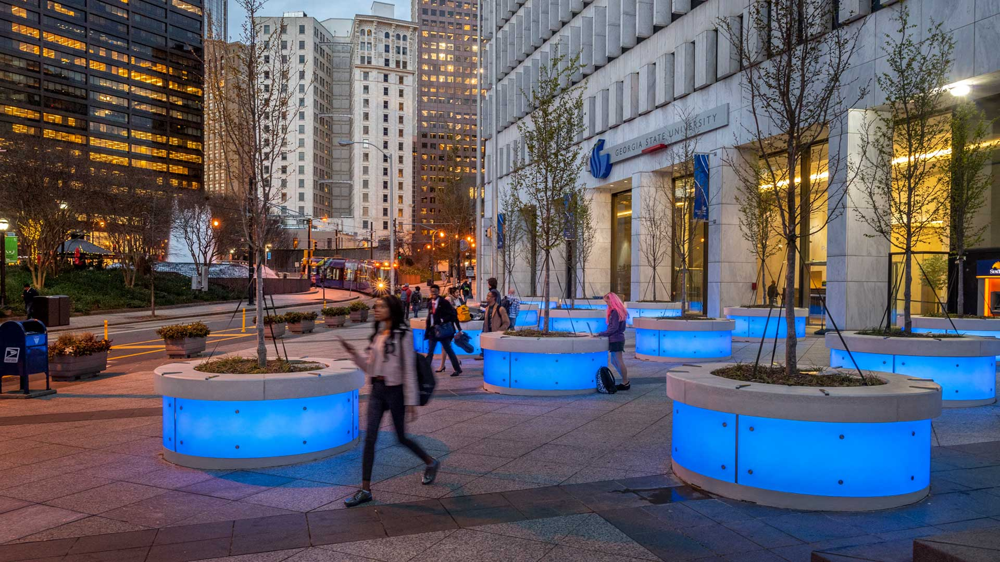

Georgia State University

I am pursuing a master's degree in computer science at Georgia State University.
Keny Nguyen's Portfolio

My name is Keny Nguyen, and I am a computer science graduate student at Georgia State University. Before beginning my master's degree, I completed my bachelor's degree in computer science at the Georgia Institute of Technology.
My academic and professional experiences have allowed me to explore several areas of computing. These areas include full-stack development, cloud infrastructure, automation, testing, and software systems that interact with real-world operations.
I have gained professional experience through software engineering and cloud engineering roles at technology, financial, transportation, and infrastructure companies. These opportunities taught me how to collaborate with teams, learn unfamiliar technologies, and create solutions for practical engineering problems.
I am especially motivated by opportunities to build dependable software that helps people work more efficiently. My long-term goal is to continue developing as a software engineer while contributing to products that have a meaningful impact.
My technical skills and professional interests include:
| Skill | Proficiency | Practical Application |
|---|---|---|
| Python | Advanced | Cloud automation and scripting |
| Go | Intermediate | Backend services and HTTP handlers |
| React | Intermediate | Full-stack web applications |
| Terraform | Intermediate | Cloud infrastructure automation |
| AWS | Advanced | Cloud infrastructure and deployment |

I am pursuing a master's degree in computer science at Georgia State University.
I completed my bachelor's degree in computer science at the Georgia Institute of Technology.